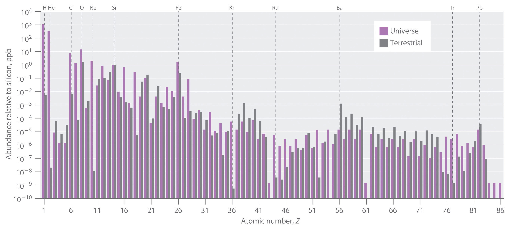
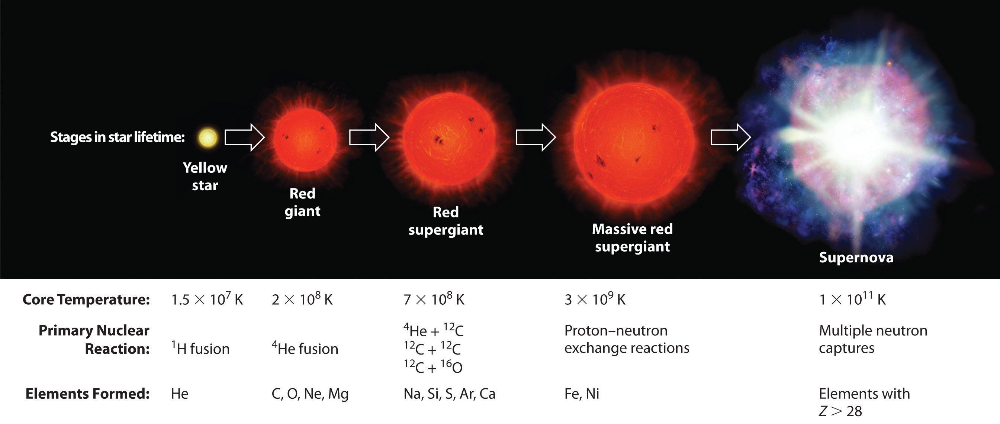
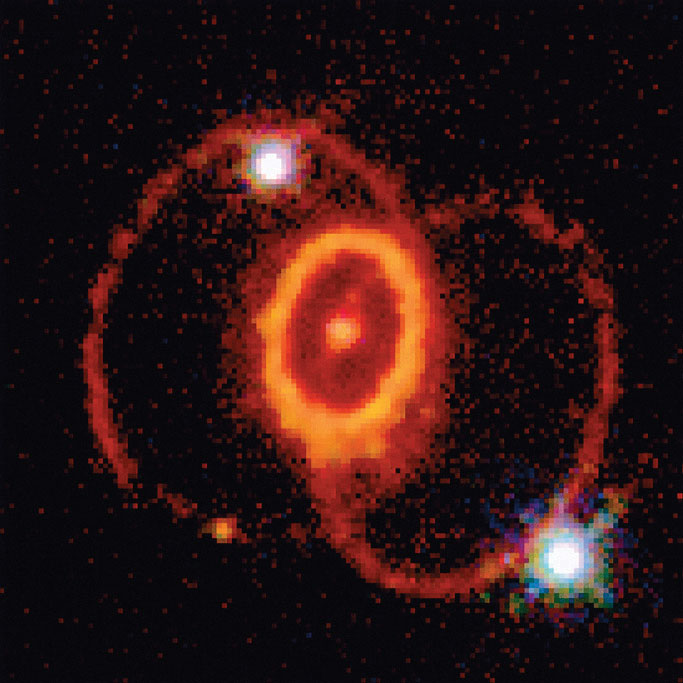

The relative abundances of the elements in the known universe vary by more than 12 orders of magnitude. For the most part, these differences in abundance cannot be explained by differences in nuclear stability. Although the 56Fe nucleus is the most stable nucleus known, the most abundant element in the known universe is not iron, but hydrogen (1H), which accounts for about 90% of all atoms. In fact, 1H is the raw material from which all other elements are formed.
In this section, we explain why 1H and 2He together account for at least 99% of all the atoms in the known universe. We also describe the nuclear reactions that take place in stars, which transform one nucleus into another and create all the naturally occurring elements.
The relative abundances of the elements in the known universe and on Earth relative to silicon are shown in Figure 20.26 "The Relative Abundances of the Elements in the Universe and on Earth". The data are estimates based on the characteristic emission spectra of the elements in stars, the absorption spectra of matter in clouds of interstellar dust, and the approximate composition of Earth as measured by geologists. The data in Figure 20.26 "The Relative Abundances of the Elements in the Universe and on Earth" illustrate two important points. First, except for hydrogen, the most abundant elements have even atomic numbers. Not only is this consistent with the trends in nuclear stability discussed in Section 20.1 "The Components of the Nucleus", but it also suggests that heavier elements are formed by combining helium nuclei (Z = 2). Second, the relative abundances of the elements in the known universe and on Earth are often very different, as indicated by the data in Table 20.6 "Relative Abundances of Elements on Earth and in the Known Universe" for some common elements. Some of these differences are easily explained. For example, nonmetals such as H, He, C, N, O, Ne, and Kr are much less abundant relative to silicon on Earth than they are in the rest of the universe. These elements are either noble gases (He, Ne, and Kr) or elements that form volatile hydrides, such as NH3, CH4, and H2O. Because Earth’s gravity is not strong enough to hold such light substances in the atmosphere, these elements have been slowly diffusing into outer space ever since our planet was formed. Argon is an exception; it is relatively abundant on Earth compared with the other noble gases because it is continuously produced in rocks by the radioactive decay of isotopes such as 40K. In contrast, many metals, such as Al, Na, Fe, Ca, Mg, K, and Ti, are relatively abundant on Earth because they form nonvolatile compounds, such as oxides, that cannot escape into space. Other metals, however, are much less abundant on Earth than in the universe; some examples are Ru and Ir. You may recall from Chapter 1 "Introduction to Chemistry" that the anomalously high iridium content of a 66-million-year-old rock layer was a key finding in the development of the asteroid-impact theory for the extinction of the dinosaurs. This section explains some of the reasons for the great differences in abundances of the metallic elements.
Figure 20.26 The Relative Abundances of the Elements in the Universe and on Earth
In this logarithmic plot, the relative abundances of the elements relative to that of silicon (arbitrarily set equal to 1) in the universe (green bars) and on Earth (purple bars) are shown as a function of atomic number. Elements with even atomic numbers are generally more abundant in the universe than elements with odd atomic numbers. Also, the relative abundances of many elements in the universe are very different from their relative abundances on Earth.
Table 20.6 Relative Abundances of Elements on Earth and in the Known Universe
| Terrestrial/Universal Element | Abundance Ratio |
|---|---|
| H | 0.0020 |
| He | 2.4 × 10−8 |
| C | 0.36 |
| N | 0.02 |
| O | 46 |
| Ne | 1.9 × 10−6 |
| Na | 1200 |
| Mg | 48 |
| Al | 1600 |
| Si | 390 |
| S | 0.84 |
| K | 5000 |
| Ca | 710 |
| Ti | 2200 |
| Fe | 57 |
All the elements originally present on Earth (and on other planets) were synthesized from hydrogen and helium nuclei in the interiors of stars that have long since exploded and disappeared. Six of the most abundant elements in the universe (C, O, Ne, Mg, Si, and Fe) have nuclei that are integral multiples of the helium-4 nucleus, which suggests that helium-4 is the primary building block for heavier nuclei.
Elements are synthesized in discrete stages during the lifetime of a star, and some steps occur only in the most massive stars known (Figure 20.27 "Nuclear Reactions during the Life Cycle of a Massive Star"). Initially, all stars are formed by the aggregation of interstellar “dust,” which is mostly hydrogen. As the cloud of dust slowly contracts due to gravitational attraction, its density eventually reaches about 100 g/cm3, and the temperature increases to about 1.5 × 107 K, forming a dense plasma of ionized hydrogen nuclei. At this point, self-sustaining nuclear reactions begin, and the star “ignites,” creating a yellow star like our sun.
Figure 20.27 Nuclear Reactions during the Life Cycle of a Massive Star
At each stage in the lifetime of a star, a different fuel is used for nuclear fusion, resulting in the formation of different elements. Fusion of hydrogen to give helium is the primary fusion reaction in young stars. As the star ages, helium accumulates and begins to “burn,” undergoing fusion to form heavier elements such as carbon and oxygen. As the adolescent star matures, significant amounts of iron and nickel are formed by fusion of the heavier elements formed previously. The heaviest elements are formed only during the final death throes of the star—the formation of a nova or supernova.
In the first stage of its life, the star is powered by a series of nuclear fusion reactions that convert hydrogen to helium:
Equation 20.42
The overall reaction is the conversion of four hydrogen nuclei to a helium-4 nucleus, which is accompanied by the release of two positrons, two γ rays, and a great deal of energy:
Equation 20.43
These reactions are responsible for most of the enormous amount of energy that is released as sunlight and solar heat. It takes several billion years, depending on the size of the star, to convert about 10% of the hydrogen to helium.
Once large amounts of helium-4 have been formed, they become concentrated in the core of the star, which slowly becomes denser and hotter. At a temperature of about 2 × 108 K, the helium-4 nuclei begin to fuse, producing beryllium-8:
Equation 20.44
Although beryllium-8 has both an even mass number and an even atomic number, the low neutron-to-proton ratio makes it very unstable, decomposing in only about 10−16 s. Nonetheless, this is long enough for it to react with a third helium-4 nucleus to form carbon-12, which is very stable. Sequential reactions of carbon-12 with helium-4 produce the elements with even numbers of protons and neutrons up to magnesium-24:
Equation 20.45
So much energy is released by these reactions that it causes the surrounding mass of hydrogen to expand, producing a red giant that is about 100 times larger than the original yellow star.
As the star expands, heavier nuclei accumulate in its core, which contracts further to a density of about 50,000 g/cm3, so the core becomes even hotter. At a temperature of about 7 × 108 K, carbon and oxygen nuclei undergo nuclear fusion reactions to produce sodium and silicon nuclei:
Equation 20.46
Equation 20.47
At these temperatures, carbon-12 reacts with helium-4 to initiate a series of reactions that produce more oxygen-16, neon-20, magnesium-24, and silicon-28, as well as heavier nuclides such as sulfur-32, argon-36, and calcium-40:
Equation 20.48
The energy released by these reactions causes a further expansion of the star to form a red supergiant, and the core temperature increases steadily. At a temperature of about 3 × 109 K, the nuclei that have been formed exchange protons and neutrons freely. This equilibration process forms heavier elements up to iron-56 and nickel-58, which have the most stable nuclei known.
None of the processes described so far produces nuclei with Z > 28. All naturally occurring elements heavier than nickel are formed in the rare but spectacular cataclysmic explosions called supernovas (Figure 20.27 "Nuclear Reactions during the Life Cycle of a Massive Star"). When the fuel in the core of a very massive star has been consumed, its gravity causes it to collapse in about 1 s. As the core is compressed, the iron and nickel nuclei within it disintegrate to protons and neutrons, and many of the protons capture electrons to form neutrons. The resulting neutron star is a dark object that is so dense that atoms no longer exist. Simultaneously, the energy released by the collapse of the core causes the supernova to explode in what is arguably the single most violent event in the universe. The force of the explosion blows most of the star’s matter into space, creating a gigantic and rapidly expanding dust cloud, or nebula (Figure 20.28 "A Supernova"). During the extraordinarily short duration of this event, the concentration of neutrons is so great that multiple neutron-capture events occur, leading to the production of the heaviest elements and many of the less stable nuclides. Under these conditions, for example, an iron-56 nucleus can absorb as many as 64 neutrons, briefly forming an extraordinarily unstable iron isotope that can then undergo multiple rapid β-decay processes to produce tin-120:
Equation 20.49
Figure 20.28 A Supernova
A view of the remains of Supernova 1987A, located in the Large Magellanic Cloud, showing the circular halo of expanding debris produced by the explosion. Multiple neutron-capture events occur during a supernova explosion, forming both the heaviest elements and many of the less stable nuclides.
Although a supernova occurs only every few hundred years in a galaxy such as the Milky Way, these rare explosions provide the only conditions under which elements heavier than nickel can be formed. The force of the explosions distributes these elements throughout the galaxy surrounding the supernova, and eventually they are captured in the dust that condenses to form new stars. Based on its elemental composition, our sun is thought to be a second- or third-generation star. It contains a considerable amount of cosmic debris from the explosion of supernovas in the remote past.
The reaction of two carbon-12 nuclei in a carbon-burning star can produce elements other than sodium. Write a balanced nuclear equation for the formation of
Given: reactant and product nuclides
Asked for: balanced nuclear equation
Strategy:
Use conservation of mass and charge to determine the type of nuclear reaction that will convert the reactant to the indicated product. Write the balanced nuclear equation for the reaction.
Solution:
Exercise
How many neutrons must an iron-56 nucleus absorb during a supernova explosion to produce an arsenic-75 nucleus? Write a balanced nuclear equation for the reaction.
Answer: 19 neutrons;
By far the most abundant element in the universe is hydrogen. The fusion of hydrogen nuclei to form helium nuclei is the major process that fuels young stars such as the sun. Elements heavier than helium are formed from hydrogen and helium in the interiors of stars. Successive fusion reactions of helium nuclei at higher temperatures create elements with even numbers of protons and neutrons up to magnesium and then up to calcium. Eventually, the elements up to iron-56 and nickel-58 are formed by exchange processes at even higher temperatures. Heavier elements can only be made by a process that involves multiple neutron-capture events, which can occur only during the explosion of a supernova.
Why do scientists believe that hydrogen is the building block of all other elements? Why do scientists believe that helium-4 is the building block of the heavier elements?
How does a star produce such enormous amounts of heat and light? How are elements heavier than Ni formed?
Propose an explanation for the observation that elements with even atomic numbers are more abundant than elements with odd atomic numbers.
During the lifetime of a star, different reactions that form different elements are used to power the fusion furnace that keeps a star “lit.” Explain the different reactions that dominate in the different stages of a star’s life cycle and their effect on the temperature of the star.
A line in a popular song from the 1960s by Joni Mitchell stated, “We are stardust….” Does this statement have any merit or is it just poetic? Justify your answer.
If the laws of physics were different and the primary element in the universe were boron-11 (Z = 5), what would be the next four most abundant elements? Propose nuclear reactions for their formation.
The raw material for all elements with Z > 2 is helium (Z = 2), and fusion of helium nuclei will always produce nuclei with an even number of protons.
Write a balanced nuclear reaction for the formation of each isotope.
At the end of a star’s life cycle, it can collapse, resulting in a supernova explosion that leads to the formation of heavy elements by multiple neutron-capture events. Write a balanced nuclear reaction for the formation of each isotope during such an explosion.
When a star reaches middle age, helium-4 is converted to short-lived beryllium-8 (mass = 8.00530510 amu), which reacts with another helium-4 to produce carbon-12. How much energy is released in each reaction (in megaelectronvolts)? How many atoms of helium must be “burned” in this process to produce the same amount of energy obtained from the fusion of 1 mol of hydrogen atoms to give deuterium?